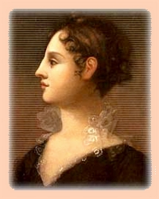

Theodosia Burr Alston
Theodosia Burr was born in July 1783 and christened at the Albany Dutch church on July 28. She was the daughter of then Albany attorney Aaron Burr and the widow Theodosia Bartow Prevost Burr.  She was the only surviving child of the marriage which ended when her mother died in May 1794.
Raised by her doting father, Theodosia grew up in New York City where, especially following the death of her mother, she was known as the "hostess of Richmond Hill." She has been identified as "among the most educated women of her day."
In February 1801, she married well-born Joseph Alston of South Carolina at the Albany church. She was still in Albany in 1802 where her character occasioned favorable notice. Her only child, Aaron Burr Alston, was born in that year as well. However, the experience that left the nineteen-year-old mother in chronically poor health.
The couple resided in Charleston. In 1812, Joseph Alston was elected governor of South Carolina. During those years, she stayed in close contact with her increasingly notorious father - visiting him in Ohio and elsewhere until he went into exile in Europe in 1808. No doubt, her father's travails contributed to her own declining health.
In June 1812, Theodosia lost her 10-year-old son to yellow fever. On December 31, she sailed for New York to visit with Aaron Burr who recently had returned from Europe. However, her ship disappeared and she was lost at sea in early January. Heartbroken, Aaron Burr lived for more than two decades - dying in 1836. Theodosia's husband survived only until 1816.
One of a number of portraits of this engaging character. This one by John Vanderlyn in 1802. Copied and adapted from an online adaptation. Original in the collection of the New-York Historical Society.
{kind=link}
{kind=link}